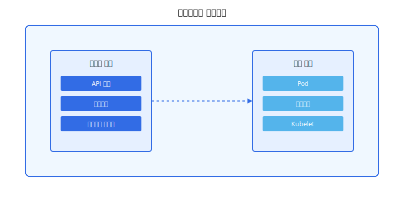

쿠버네티스는 컨테이너화된 애플리케이션을 효율적으로 관리하고 배포하기 위한 오픈 소스 플랫폼입니다. 복잡한 애플리케이션을 쉽게 운영하고 확장할 수 있도록 도와주며, 현대적인 클라우드 네이티브 환경 구축의 핵심 요소로 자리 잡았습니다.
1. 쿠버네티스란 무엇인가?
- 컨테이너 오케스트레이션: 쿠버네티스는 컨테이너(Docker와 같은)를 관리, 배포, 스케일링하는 것을 자동화하는 시스템입니다.
- 오케스트레이션: 여러 컨테이너를 하나의 시스템으로 관리하고, 각 컨테이너가 올바르게 작동하도록 보장합니다.
- 마이크로서비스 아키텍처 지원: 분산된 작은 서비스들을 쉽게 구축하고 관리할 수 있도록 합니다.
- 클라우드 네이티브: 클라우드 환경에서 애플리케이션을 최적화하여 성능, 확장성, 안정성을 높입니다.
2. 쿠버네티스의 핵심 구성 요소

- 마스터 노드: 쿠버네티스 클러스터의 컨트롤 플레인 역할을 수행합니다. API 서버, etcd, scheduler, controller manager 등으로 구성됩니다.
- 워커 노드: 애플리케이션을 실행하는 실제 노드입니다. 마스터 노드의 명령에 따라 컨테이너를 실행하고 관리합니다.
- 컨테이너: 애플리케이션과 그 의존성을 담은 패키지입니다.
- Pod: 하나 이상의 컨테이너를 묶어 놓은 가장 작은 실행 단위입니다.
- Service: 여러 Pod를 그룹화하여 네트워크를 통해 접근할 수 있도록 합니다.
- Deployment: 애플리케이션의 배포 및 업데이트를 관리하는 데 사용됩니다.
- Namespace: 클러스터 내에서 리소스를 논리적으로 구분하는 데 사용됩니다.
3. 쿠버네티스의 주요 기능 및 특징
- 자동화된 배포 및 롤아웃: 애플리케이션을 자동으로 배포하고, 업데이트를 관리하며, 이전 버전으로 롤백하는 기능을 제공합니다.
- 스케일링: 애플리케이션의 트래픽 증가에 따라 자동으로 컨테이너의 수를 늘리거나 줄여서 리소스를 효율적으로 사용합니다.
- self-healing(자가 치유): 컨테이너가 다운되면 자동으로 재시작하거나 대체 컨테이너로 교체하여 애플리케이션의 가용성을 유지합니다.
- 로드 밸런싱: 트래픽을 여러 컨테이너에 분산시켜 애플리케이션의 성능을 향상시키고, 특정 서버에 과부하가 걸리는 것을 방지합니다.
- 자동화된 서비스 검색: 컨테이너 간의 통신을 자동화하여 애플리케이션의 복잡성을 줄입니다.
- 리소스 관리: CPU, 메모리 등 리소스를 효율적으로 할당하고 관리하여 서버 자원 낭비를 줄입니다.
- 고가용성: 컨테이너가 실패할 경우 자동으로 대체 컨테이너를 시작하여 서비스 중단을 방지합니다.
- 포터빌리티: 다양한 환경(온프레미스, 클라우드 등)에서 실행 가능합니다.
4. 쿠버네티스의 활용 분야
- 웹 애플리케이션: 웹 서비스 및 API를 효율적으로 배포하고 관리합니다.
- 마이크로서비스 아키텍처: 복잡한 애플리케이션을 작은 독립 서비스로 분리하여 개발 및 배포합니다.
- 데이터 분석: 대규모 데이터 처리 작업을 효율적으로 관리합니다.
- 머신 러닝: 복잡한 ML 모델의 학습 및 추론 워크로드를 처리합니다.
- DevOps 환경: CI/CD 파이프라인과 연동하여 지속적인 배포를 지원합니다.